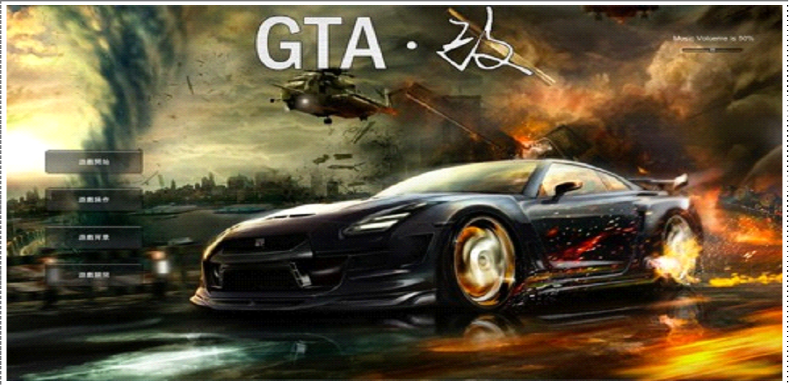
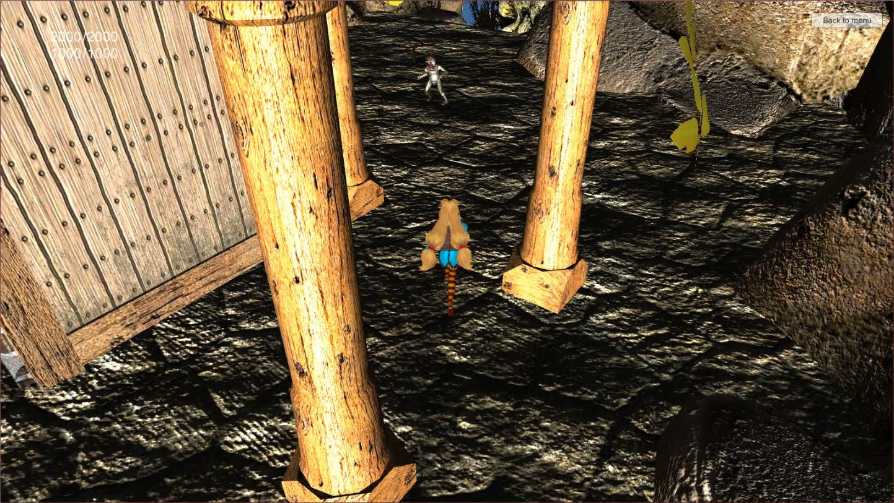
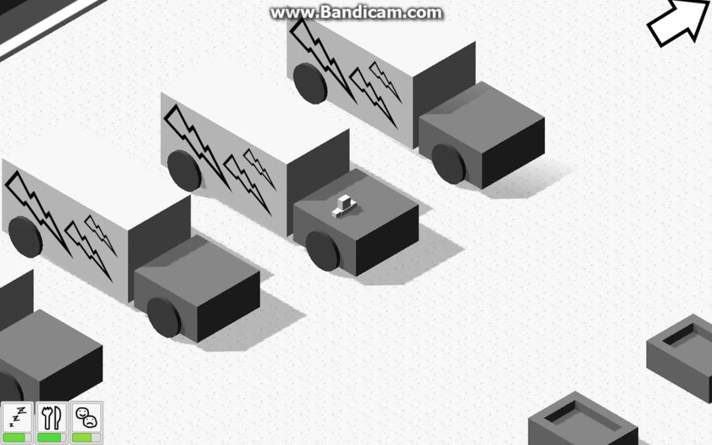
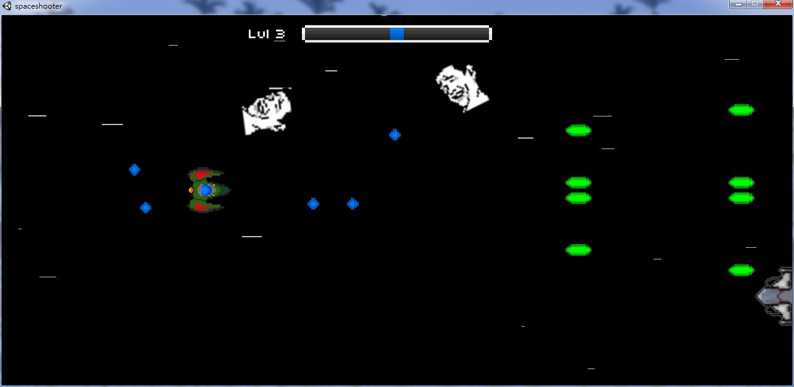
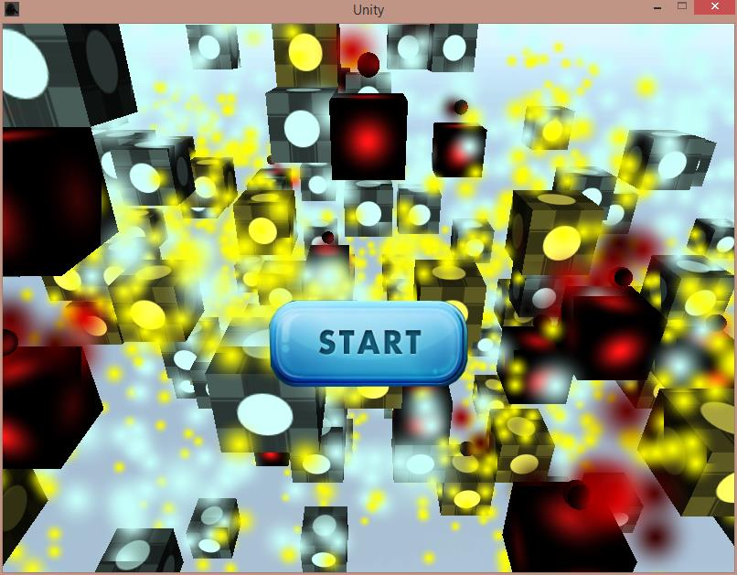
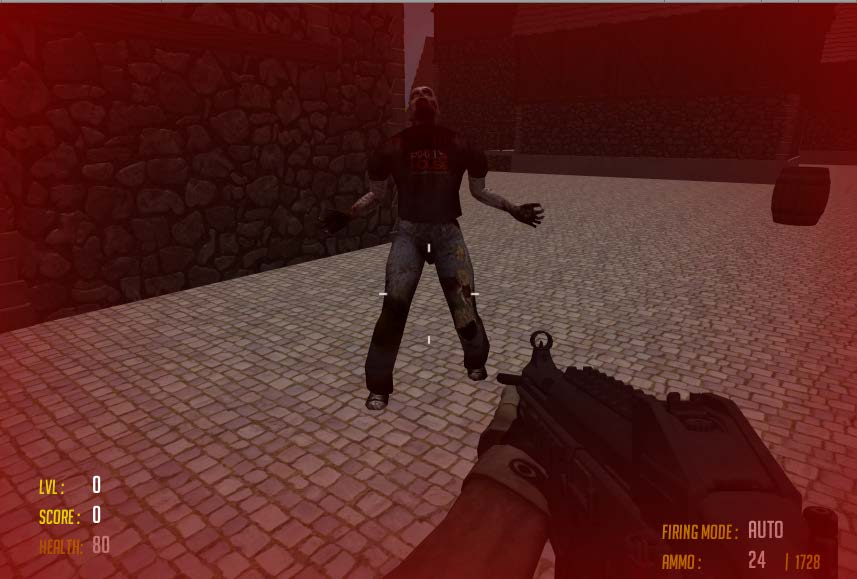

Finial Project
-
遊戲類型：節奏遊戲
DEMO歌曲：Bigbang–Good Boy
難度：極高
01_CrazyPiano
-

在遊戲中，主角有會因為危害社會(濫殺靜辜)或是擎殺壞人、完成任務而導致善惡值的增加或減少，而善惡值的分數則決定了遊戲的結局。
02_GTA
-
一款3D動作冒險遊戲
03_Just A Adventurer
-

一位台灣的黑道大哥，因為在江湖上的風雨 ，而不幸進到監獄。在監獄當中過了大半人生的日子。這段監獄人生當中，讓他有了人生的醒悟 ，他決定金盆洗手，當一名卡車司機，好好的過完後半段的人生。台灣運將在他後半段的人生當中，又會遭遇到什麼樣的人生際遇呢？？台灣運將人生就要靠各位玩家們來幫他創造囉………………
04_LifeOfTruckDriver
-

遊戲介紹:
方向鍵盤↓ ↑ ← →移動
SPACE空白鍵射擊
用滑鼠選取遊玩模式
打爆敵人後敵人會分散化為藍色的經驗值飛到船身，別害怕，那是我們升級的來源唷!
05_ShootToThrill
-

點擊「Start」之後，就開始遊戲，想辦法在不斷冒出來的怪物中生存下來，保護僅存的人們(就在橘色方塊裡)。
06_Survival In The Bloody Land
-
遊戲就像足球 12 碼罰球的方式一樣進行 ，進一球分數增加 100 分， 而分數越高守門員的反應就越快越靈敏 ，要如何踢的巧才能得到滿分呢?。
07_WorldCupPenalityKick
-

在很久很久以前的一座黝黑的城市，出現了生化危機版的殭屍出沒。為了使這座城市回覆平靜，拿出堅韌不屈的勇氣來消滅殭屍吧。
08_Zombie_Killer